把一线痛点，
做成用得起来的 AI 工具
来自 运营管理部、药物安全部、数据管理部、医学部 的五个真实场景——
从业务痛点出发，用 AI 跑第一棒，由人做最终判断。
五个场景，覆盖 四个业务部门
运营考核可视化
590+ 人、12 个部门的考核：200 多条标准自动核算，结果可视化排名
SAE 智能处理
几十页报告表自动抽取 5 类关键信息，从按小时计到按秒计
实验室范围数据集智能审核
9 道规则关卡 + AI 二审，核查几百条"正常值范围"尺子
安全性数据集智能审核
检查异常 ↔ 不良事件的医学"连线题"，AI 匹配、程序核查、人工仲裁
方案变更说明智能生成
方案比对 → 证据卡片 → 医学判断 → 变更说明成稿，完整闭环
整体介绍 2 min
场景讲解 28 min
总结反思 3 min
以小见大：痛点 → 解法 → 效果
都来自一线业务痛点
五个场景有一个共性：以小见大——全部来自业务同事亲身经历的一线痛点，不是凭空设想的"AI 秀场"。
灵感贡献者 × 自主开发者
场景归属人要么是灵感的贡献者，要么是自主开发者——他们都是善于思考、敢于尝鲜、跑在技术发展第一线的业务同事。
每个场景讲三件事
① 业务痛点是什么；② 我们是怎样通过 AI 解决问题的；③ 最终效果与下一步计划是什么。
先从业务讲起
这个环节在临床试验里是什么、为什么重要
场景痛点
过去靠人怎么做，难在哪里、贵在哪里
工具 Workflow
AI + 程序怎么把这件事重做一遍
效果与计划
实际成效、验证情况与下一步迭代方向
运营考核可视化
590+ 人、12 个部门、30 多种岗位的绩效考核：200 多条标准固化成表格公式，五路数据一键归集，AI 自动核算，结果可视化呈现。
590 多人的考核，难在三个地方
临床研发中心 590 多人、12 个部门、30 多种岗位——绩效考核的复杂性来自规模，更来自差异。
标准多，且各不相同
每个部门一套专属标准，合计 200 多条——CRA 的尺子和统计师的尺子完全不是一回事，无法套用同一把量尺。
数据散在五处
考核数据散在四套业务系统：太美 CCP（项目协作）、EDC（数据管理）、eTMF（文档管理）、eQuality（质量管理），外加领导的人工评价——五路数据没有统一入口。
最终要汇成一个数
五路数据最后要变成每个人头上一个公平的分数，既要算得准，也要让大家认。
标准化 → 自动化 → 可视化的考核全流程
依托 AI 工具与齐飞工作助手，把"收数、算分、看结果"整条链路重做一遍。
01定制化考核模板
12 个部门 12 套专属计算表格，200 余条标准逐条拆解、嵌入自动化公式，规则统一固化
02多源数据一键归集
太美 CCP、EDC、eTMF、eQuality 四大系统及主管评价指标，按预设列项统一导入
03AI 自动核算分数
内嵌公式自动完成全维度核算、分数统计、指标汇总，零人工二次核对，一键生成精准成绩
04可视化交互展示
齐飞工作助手"妙搭"搭建可交互展示系统：数据筛选、同岗位排名、差异化颜色标记
05结果查询与应用
快速筛选部门、岗位、人员数据，直观对比同岗位差异，支撑考核复盘与人员管理
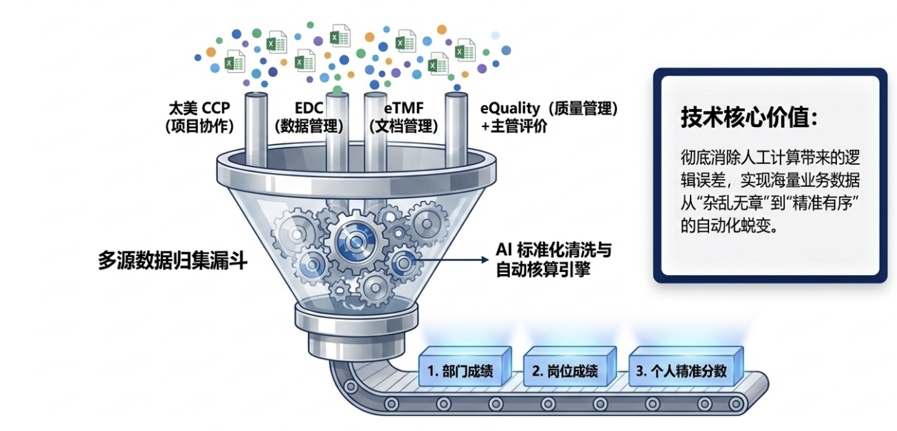
颜色标记 + 一条明确的设计红线
差异化颜色标记规则
绿色 = 前 30% 红色 = 后 30%
只在人数最多的 4 个大部门标注首尾 30%，让两头都被看见。
金 青 玫
其余 8 个小部门只标并列前三名，三色标识、简单清晰。
glimmer-01.github.io/clinical_Q2
让优秀的人被看见，让落后的人被提醒，而不是被示众。"
从系统迭代到全域落地
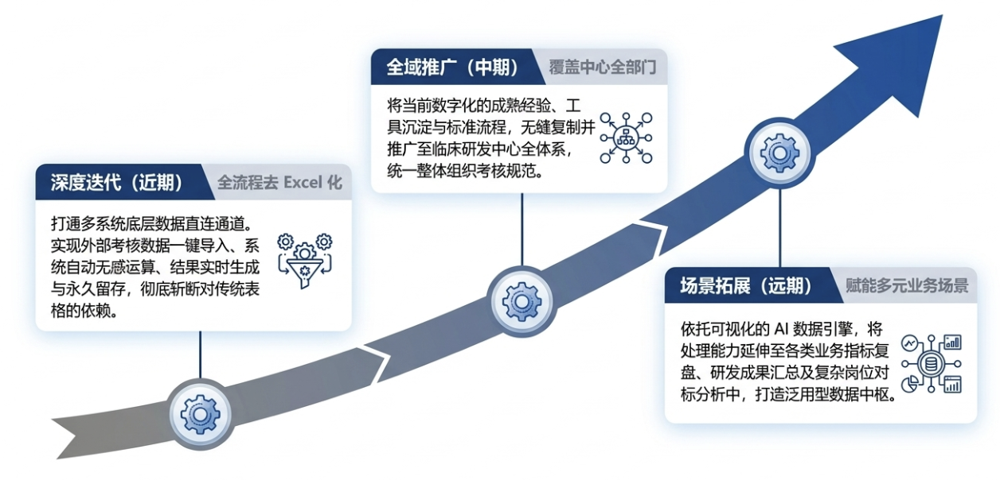
SAE 智能处理
严重不良事件报告表：9 张表格、几十页的 Word 文档，自动抽取 5 类关键信息并生成规范汇总——原来按小时计的活，现在按秒计。
安全这条线，监管盯得最紧
安全，决定了新药"敢不敢用"
临床试验招募受试者，按试验方案给药，持续观察疗效和安全性。疗效回答"有没有用"，安全性回答"敢不敢用"。
受试者在试验期间出现死亡、住院、危及生命的情况，即为"严重不良事件"（SAE）。
严格的法规时效要求
一旦发生 SAE，必须在极为严苛的规定时限内上报国家药监部门——我们的药物安全部，就是专门接收、处理、上报这些事件的部门。
几十页报告表，靠人逐字誊抄
AE 以一份"报告表"的形式从研究中心传来：Word 文档，9 张表格、几十页，把受试者的来龙去脉全装在里面。
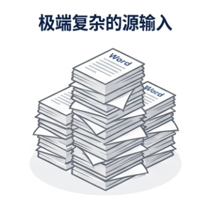
从每份报告表里，把 5 类关键信息逐字摘录出来，核对无误，再拼成规范汇总文档：
用过什么药、做过哪些检查化验、有什么既往病史、事件起因经过、什么时候签的知情同意书。
① 纯人工
两份窗口并排，左边报告、右边汇总表，眼睛来回扫
② 零容错
抄错一个日期、一个剂量单位，传到下游就是事故
③ 会堆量
报告集中来的时候，加班誊抄是常态
按小时计的活，现在按秒计
传统模式
按小时计
高度依赖人工誊抄，耗时长且极易出现人为失误
上传报告表
把 SAE 报告表的 Word 文档传给工具
自动抽取 5 类信息
用药、检查检验、事件详情、病史、知情同意，按详实规则提取
生成规范汇总 Word
自动拼装成规范汇总文档，供审评、录入、上报使用
数智模式
按秒计
瞬间完成结构化提取，已在 10+ 真实项目中跑通严格验证
不让大模型直接"看着文档写摘要"——同样的文件问两次，措辞可能就不一样。而是让 AI 帮我写一套确定性的解析脚本：同一份文件跑一百次，结果一字不差。
可复现、可审计——这正是药物安全这种强合规场景的硬要求。
真正的难度，在细节的把控
在一份 9 张表格、几十页的 Word 文档中，按详实的规则去提取、按详实的规则去总结——举两个真实的"坑"。
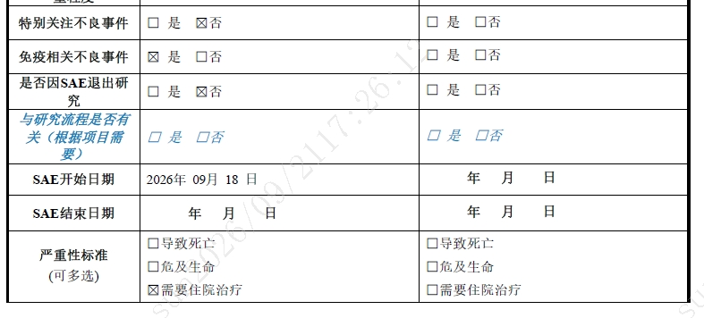
坑一：勾选框里的特殊字符
容易把"没勾"当成"已勾"——性别、有没有病史，全部判反。
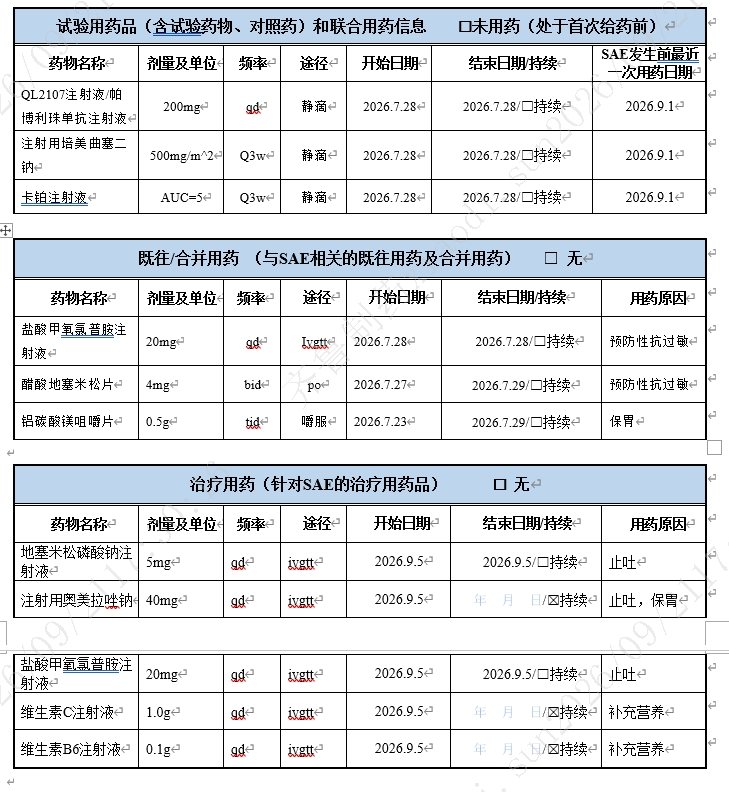
坑二：三张相似的用药表
其中一张装的是试验药——按规定绝不能混进提取结果，这是业务红线。
从"抄写员"到"审核员"
机器负责绝对准确的搬运，人类回归高价值的医学判断与安全性趋势分析。
接入邮箱 MCP，7 × 24 持续运行
- 自动识别邮件中的 SAE 文件
- 自动触发解析、字段抽取、文本组装、结果输出与日志记录全流程
- 人从"抄写员"变成"审核员"：誊抄交给机器，人只做复核
打通药物警戒业务全链条
聚合 SAE 邮件提取、多人在线审阅、审批传递、智能撰写、智能录入等功能。
数据集 AI 审核双工具
实验室范围数据集智能审核 & 安全性数据集智能审核——数据管理工作中两个最"磨人"的核查场景，分别用"规则 + AI"的双层结构重做一遍。
数据质量，就是临床试验的生命线
- 一款新药从实验室走到药房，必须跨过临床试验这道门槛：在真实患者身上验证它是否安全、是否有效。
- 试验过程中会产生海量数据——每一次访视、每一管血、每一项化验指标都会被记录下来，最终提交给药监部门，作为审批的核心依据。
- 临床试验的本质，就是"用数据证明一款药值得被信任"。
- 数据管理部的职责：确保试验数据真实、准确、完整、一致。专业判断由研究者进行，DM 负责让几百个中心报上来的数据口径统一、没有漏错，经得起药监部门的审评。
"数据质量就是
临床试验的生命线"
—— 行业里的一句话
这项支持保障工作里，有两个场景最磨人——今天汇报的两个工具，就分别解决这两个场景。
实验室范围数据集
智能审核
几百条"正常值范围"尺子，过去靠人逐行核对、按天计；现在用"规则初审 + AI 二审"的双层结构，点一下按钮、按分钟拿到完整审核报告。
一把"尺子"的核对
受试者做血常规、肝功能等实验室检查，拿到一个化验值，怎么判断正常还是异常？靠的是"实验室正常值范围"这把尺子。
不同中心实验室
各家用各家的参考范围
不同性别
男女标准不一样
不同年龄段
年龄区间各有一套
随时间换版
同一实验室也会更新版本
这把尺子不是全国统一的一根，而是"千人千面"：一个项目下来有几百条这样的尺子，每一条都要逐条核查、配置进系统。
尺子错了，所有安全性分析跟着错——异常判成正常，可能漏掉安全风险；正常判成异常，又制造大量无效报警。
人工逐行核对，压着"五座大山"
规则多
性别、连续性、时间重叠等十几项检查点，全靠人脑记
量大
几百条记录逐行比对，疲劳作业错误率就上来
标准散
范围合不合理全凭个人经验，同一数据评价因人而异
沟通长
发现问题后与一线 CRA 平均往返 2.5 次以上
经验断
项目周期长、人员流动大，审核标准随之断层
| 表 1 · 人工核查发现的问题分布 | ||
|---|---|---|
| 检查项缺失或名称错误 | 60% | 漏报检测项、名称与标准不符 |
| 重复记录 | 8% | 同一条件出现完全相同的两条 |
| 逻辑错误 | 7% | 下限大于上限等 |
| 范围和单位不合理 | 5% | 超出医学常识的取值 |
| 其他问题 | 20% | 日期重合、年龄区间断档等 |
60%
的问题集中在"检查项缺失或名称错误"——最高频的错误，恰恰最适合交给规则固化。
"规则初审 + AI 二审"的双层结构
把过去靠人脑记忆的检查点固化成程序：
核心原则：同一检测项、同一实验室、同一年龄段、同一时间段、同一性别，有且只能有一套标准值。
负责规则覆盖不了的"合理性"判断——某个检测项的范围和单位在医学上到底对不对，由大模型给出判断和依据。
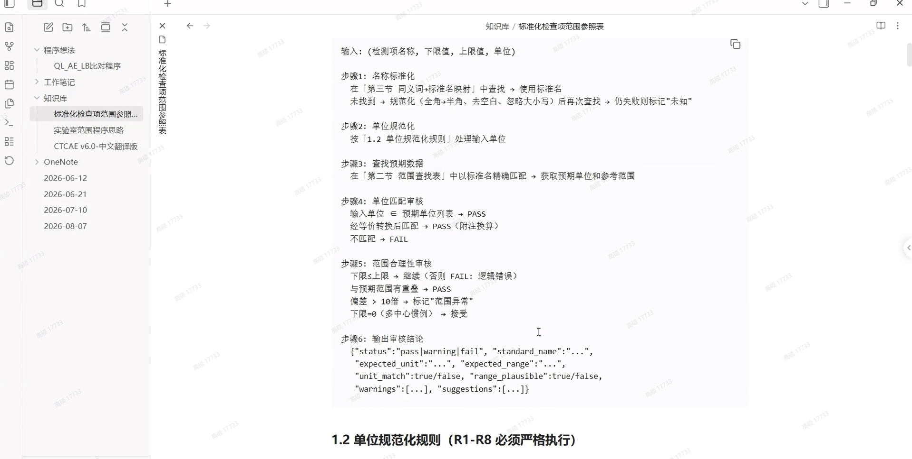
使用非常简单，一共四步
准备文件
放入百奥知 4.1 标准化模板和 CRA 提交的收集表，自动识别数据范围和列名
运行分析
一键跑完全部 9 大核查规则和 AI 分析
查看报告
AI 给出每条问题的分析摘要——AI 找问题、给建议，最终拍板的还是"人"
导出结果
一键生成三个 Sheet：标记数据、错误报告、可直接导入百奥知 4.1 的标准格式
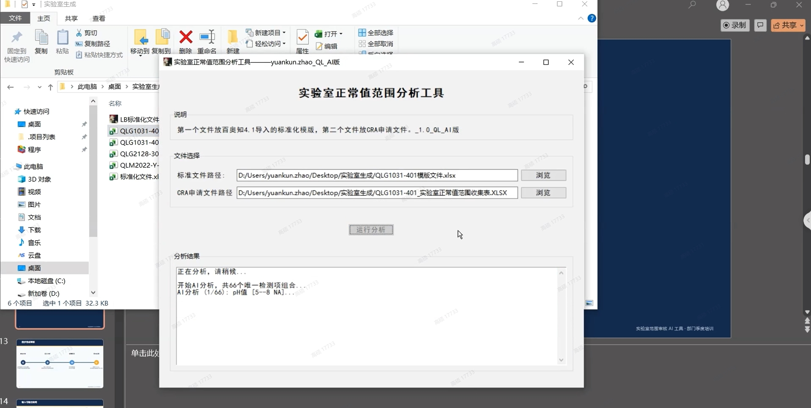
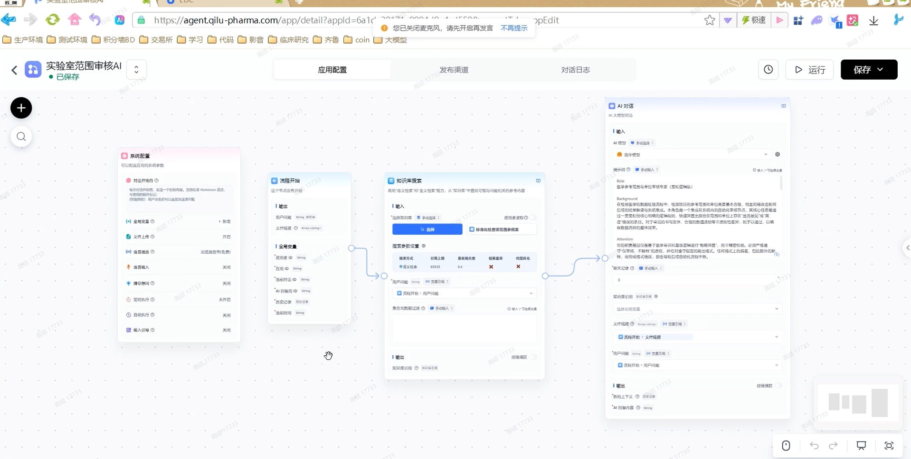
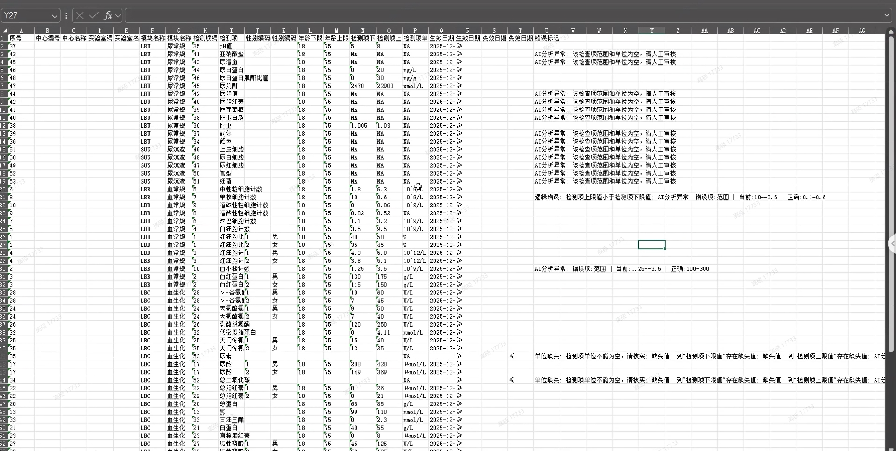
效率、标准、沟通，三重改善
天 → 分钟
过去几百条记录逐行核查要按天算，现在点一下按钮、按分钟计就能拿到完整报告。
同一起跑线
审核标准被 AI 拉到同一起跑线，新人第一天就能按资深员工的标准干活。
一次性反馈
问题一次性集中反馈、附行号和 AI 分析依据，CRA 照着改就行，来回拉扯大幅减少。
安全性数据集
智能审核
检查异常 ↔ 不良事件的医学"连线题"：把需要医学知识的"匹配"交给 AI，把不需要医学知识的"核查"留在程序里，最后由人来仲裁。
一道医学"连线题"
受试者的每一次检查异常，都应该对应一条不良事件（AE）或病史记录；连对了之后，还要核对这条 AE 的开始结束日期、相关性是否合理，有没有多记、漏记。
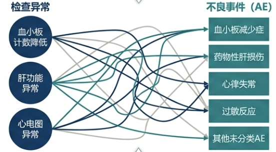
"血小板计数降低"该连到哪条 AE？不是看字面就能对的——连线本身需要医学知识。
一个项目几百条异常、上百条 AE，全靠有经验的老师傅逐条比对。
一条四层流水线
第一层 · 信息过滤
把每名受试者的全部 AE 和病史，先用日期逻辑做物理过滤——采样日期落在事件起止区间内
第二层 · AI 做连线
把"检查情况 + 备注 + 候选选项"发给集团内部 FastGPT 平台上的 agentic workflow，由模型判断这条异常应对应哪条 AE 或病史
第三层 · 程序做逻辑判定
AI 返回空 → 可能漏记 AE；AE 找不到对应异常 → 可能多记；日期对不上、AI 判断与备注引用不一致 → 自动生成质疑，附行号和依据
第四层 · 人工判定
程序生成过程文件：过程文件人工可以直接改，最终结果文件同步更新
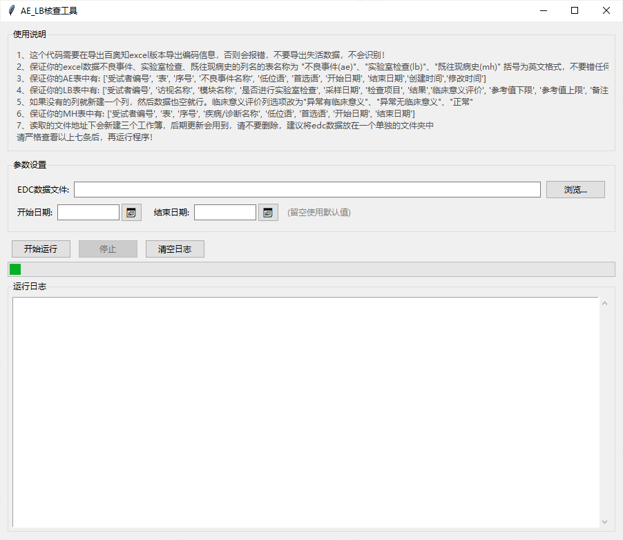

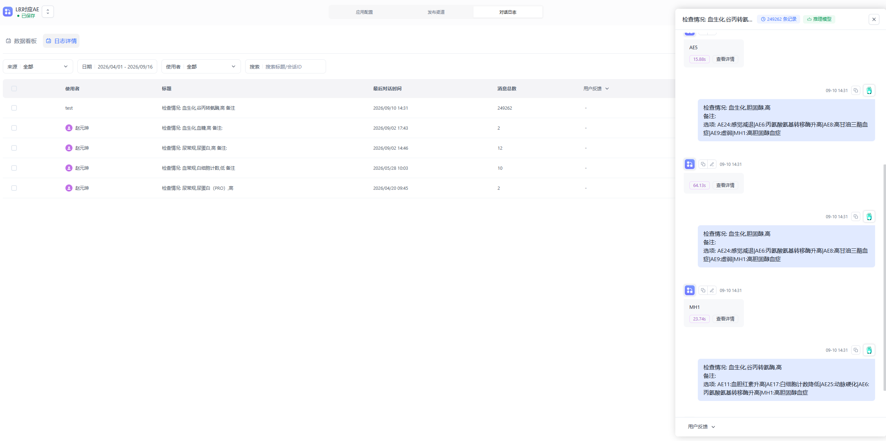
"大模型蒸馏"：老师带学生
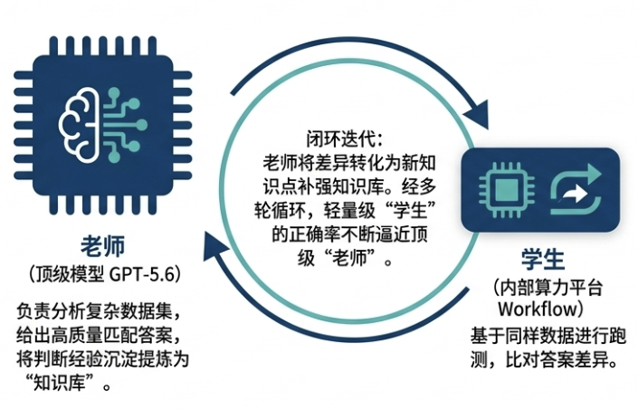
师顶级模型当"老师"
先让 GPT-5.6 分析数据集、给出高质量答案，并把判断经验沉淀提炼为知识库
生内部平台当"学生"
内部算力平台上的工作流跑同样的数据，输出自己的答案
比比对差异、补强知识库
比对"师生"两份答案的差异，老师把差异整理成新的知识点
进反复几轮
学生的正确率不断逼近老师
用我们自己的算力平台，花更少的钱、用更快的速度，做出这个场景下接近顶级模型的准确率——而且数据全程不出内网。
- 继续用蒸馏思路打磨，以先行项目把正确率调到稳定
- 封装成 EXE、附完整使用说明发给部门成员，点击即可使用
- 把"规则引擎 + AI 审核 + 人机协同"范式扩展到更多团队的核查场景，让更多重复、规则化、依赖经验的审核工作交给 AI 跑第一棒
临床方案变更说明
文件智能生成
不是把两份 Word 交给 AI 写一段摘要，而是把"方案比对、证据核对、医学判断、变更说明成稿"串成一套完整、可交互、可追溯的工作流程。
每次方案修订，都是一次医学影响评估
- 方案＝整个试验的"总设计图"规定哪些患者可以参加、接受什么治疗、何时进行检查、如何评价疗效，以及出现什么情况需要停药或加强安全监测。
- 医学部的重要职责把产品策略和科学假设转化为可执行的临床研究设计，并持续判断方案是否科学、是否有利于患者、是否带来新的安全风险。
- 执行过程中经常需要修订原因可能来自监管反馈、新的安全性信息、执行可行性问题或研发策略调整。
所以，这不是简单的文档工作，而是一次医学影响评估。
这件事难在五个"要"
① 要找全
一份方案往往上百页，变化可能出现在正文、表格、脚注或访视安排中。漏掉一个关键条件，就可能影响入组人群、给药管理甚至受试者安全。
② 要分清
整页变化可能只是编号或排版调整，而一个词的变化却可能改变医学含义。传统文档比对容易产生大量噪声。
③ 要讲明白
发现差异后，还要逐条理解上下文、填写原因并判断风险，重复劳动多，结果也容易受个人经验和表达习惯影响。
④ 要可追溯
人工复制粘贴后，经常难以回答某条结论来自哪里、为什么这样判断、是否遗漏上下文。
⑤ 时间压力
方案修订通常伴随着伦理、注册和中心执行等后续任务，留给医学人员的时间非常有限。
先找全，再讲清，最后由人确认并固化成稿
01输入
旧版方案、新版方案和公司的变更说明模板（已内嵌一版）
02先找全
读取文档结构，判断内容的新增、删除、修改、移动、拆分和合并六类变更操作
03再讲清
变化整理成一张张证据卡片进入本地审阅界面，每张卡片保留变更前后内容、所在章节和来源位置；AI 提供变更原因、实质性判断和安全风险判断的初步建议
04人确认
AI 只是"起草助手"——最终是否采纳、如何修改，仍由医学人员决定
05固化成稿
审阅完成后系统冻结当时的结果，按既定模板生成 Word 工作草稿，并提供预览和下载
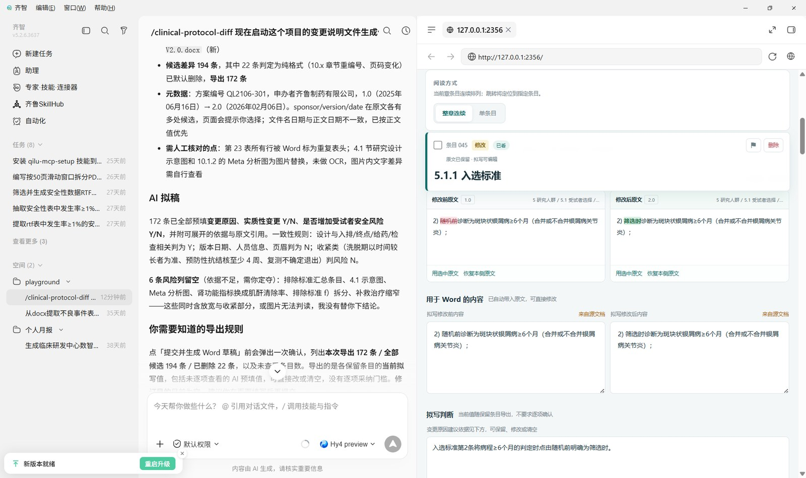
形成了从文件输入到正式文档输出的完整闭环，而不只是一个比对算法或聊天界面。
同一页面审阅两份文件，可交互、可追溯
均已在演示中可用
- 建立更明确的医学规则如何处理未接受的修订痕迹、哪些轻微变化可以不纳入，以及实质性变更和安全风险的统一判断口径
- 历史方案双轨验证重点观察关键变化遗漏情况、无效差异数量、审阅时间、AI 建议采纳率和人工修改量，用真实数据评价价值
- 探索联动修订待本技能稳定后，探索相关文件联动修订的实现路径
三点思考，
一张蓝图
五个场景落地之后：三点思考——关于尝鲜的人、关于工具的更多可能性、关于人与 AI 的分工；再以一张全景蓝图，对齐《数智化五年发展规划》的愿景。
三点思考
星星之火
它适合善于思考、敢于尝鲜的人，能让人以更低的门槛，开发适合个人及团队的小工具。
希望更多人迎着这次"办公平台的升级"及"数字员工的引入"，挖掘更多有价值的、更有趣的场景。
更多的可能性
自己开发的工具或技能，具备发展成团队工具、甚至系统级产品的潜力。
我们会以《数智化五年发展规划》为参考，从众多技能或工具中汲取灵感，追赶规划中提出的愿景。
Human in the Loop
AI 不是替代人的工具，而是接住流程中最耗时、最容易出错环节的助手。
人，始终是最终的价值判断者。
对齐《数智化五年发展规划》的全景蓝图
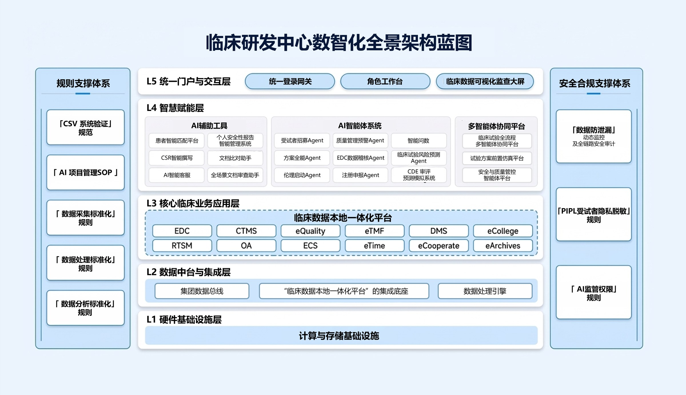
- 今天分享的五个小工具，正是蓝图中 L4 智慧赋能层 的真实萌芽。
- 从个人工具到团队工具，再到系统级产品——从众多技能与工具中汲取灵感，追赶规划中的愿景。
- 统一门户、AI 智能体系统、多智能体协同平台，都期待更多一线同事的场景加入。
让 AI 跑第一棒，
让人做最终判断
以上五个场景均已落地可用，欢迎各部门同事交流、试用、提出新场景。